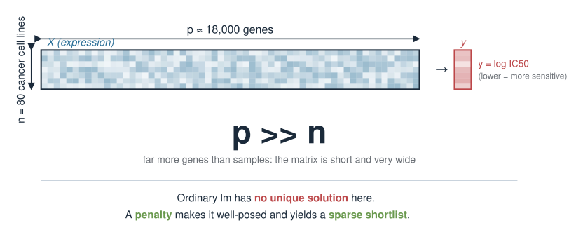
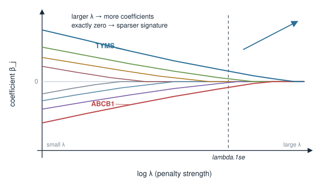
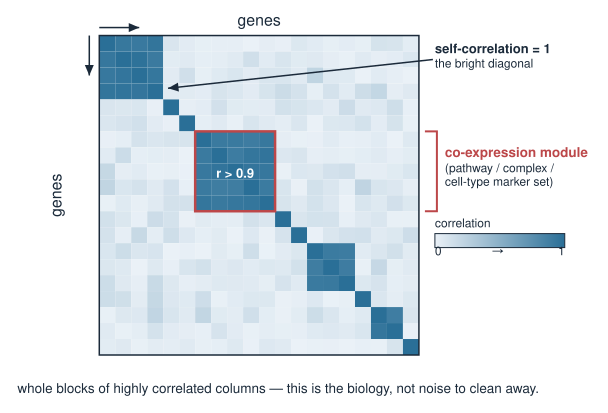
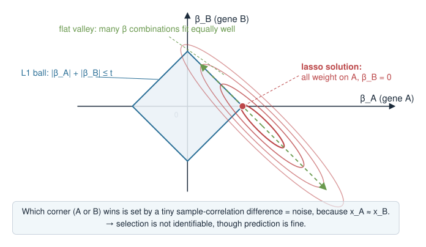
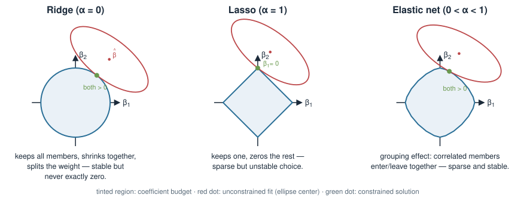
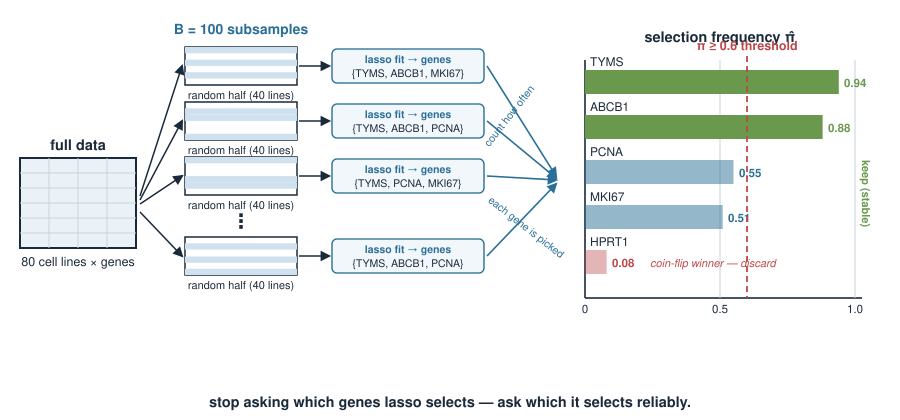
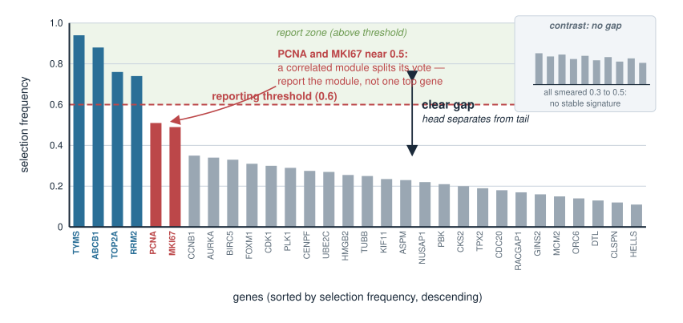
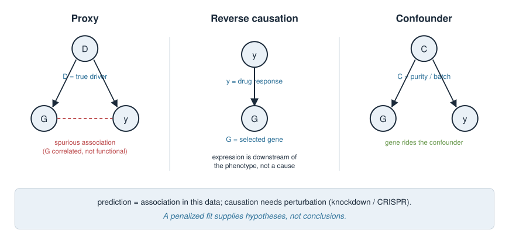
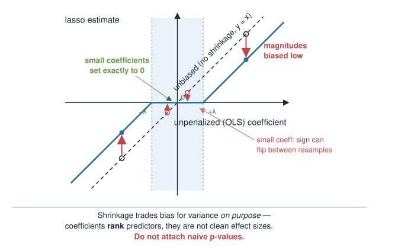
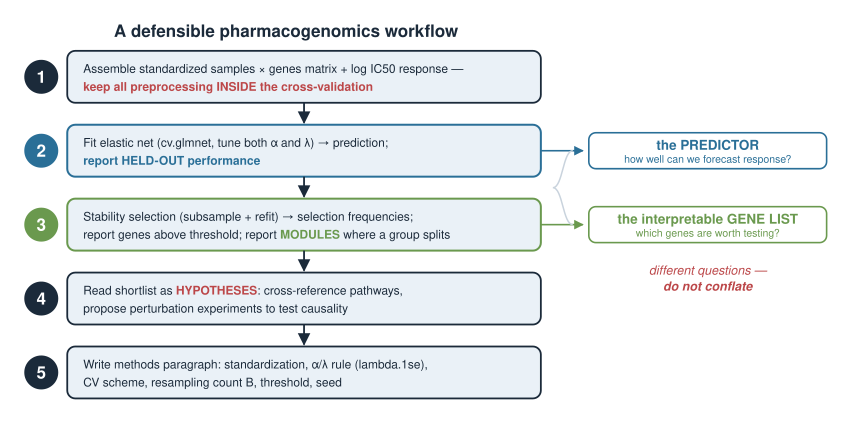

Penalized linear models — Case analysis & pitfalls
Quantitative biology and integrative omics
About this lecture
In Ridge, lasso & elastic net you learned what a penalty does, and in Cross-validation & model selection you learned how to tune it. Today we put a penalized model to work on a real biological question and, crucially, stare hard at how it can mislead us.
Identifiability: when predictors are correlated (as biological features almost always are), the lasso picks one member of a correlated group more or less arbitrarily — and the choice flips under tiny data changes.
Stability selection: a resampling idea that turns an unstable one-shot selection into a selection frequency you can trust.
Interpretation: a selected gene is a predictor, not proven causal. Coefficients are shrunk and biased; naive p-values after selection are invalid.
Reporting: what an honest methods paragraph must state so the analysis is reproducible.
Note
Provisional block. Penalized linear models may move to a later statistics / machine-learning course. Treat this unit as a first pass; the depth and placement are still being decided.
The biology: predict drug response from expression
A pharmacogenomics study measures, for 80 cancer cell lines:
gene expression for ~18,000 genes (a samples × genes matrix), and
sensitivity to a drug, summarised as a continuous \(\log \text{IC}_{50}\) (lower = more sensitive).
The question: which genes predict drug response, and can we build a compact predictive signature?
Far more genes (\(p \approx 18{,}000\)) than samples (\(n = 80\)) — the classic \(p \gg n\) regime. Ordinary lm cannot even be fit uniquely.
A penalty makes the problem solvable and hands us a sparse shortlist. This is exactly the job the lasso was built for.

Recap: the model we are fitting
We fit a penalized linear model. For the lasso (\(L_1\) penalty):
\[\hat{\boldsymbol\beta} = \arg\min_{\boldsymbol\beta}\ \underbrace{\tfrac{1}{2n}\sum_{i=1}^n \big(y_i - \beta_0 - \mathbf{x}_i^\top\boldsymbol\beta\big)^2}_{\text{fit to the data}} \;+\; \underbrace{\lambda \sum_{j=1}^p |\beta_j|}_{L_1\text{ penalty}}\]
\(\lambda\) (chosen by cross-validation) sets how hard we shrink; larger \(\lambda\) → more coefficients driven exactly to zero → sparser signature.
Predictors are standardized before fitting so the penalty treats every gene on the same scale (glmnet does this internally by default).
library(glmnet)x <-as.matrix(expr) # 80 samples x 18000 genesy <- logIC50 # length-80 responsefit <-cv.glmnet(x, y, alpha =1, standardize =TRUE, nfolds =10)coef(fit, s ="lambda.1se") # sparse: most genes have coefficient 0

The trap: biological predictors are correlated
Genes do not vary independently. They travel in co-regulated groups:
genes in the same pathway or co-expression module rise and fall together,
members of a protein complex are transcriptionally coupled,
a cell-type proportion shift moves hundreds of marker genes in lockstep.
So the design matrix has whole blocks of highly correlated columns — often \(r > 0.9\).
This is not a data-quality problem to be cleaned away. Co-regulation is the biology. And it is precisely what makes variable selection unstable.

Identifiability: why the lasso picks just one
Suppose genes \(A\) and \(B\) are almost perfectly correlated and each truly relates to the response.
To the fit, \(\beta_A x_A + \beta_B x_B\) with \(x_A \approx x_B\) is almost the same as putting all the weight on \(A\), or all on \(B\), or splitting it.
The \(L_1\) penalty \(|\beta_A| + |\beta_B|\) is smallest when the weight sits on one predictor, not split — so the lasso concentrates on a single member and zeros the rest.
Which one? Whichever has a hair more correlation with \(y\)in this particular sample. That tie-break is essentially noise.
The model’s predictions are fine. The selected gene list is not identifiable: a different sample would pick \(B\) instead of \(A\).

Watch it happen: same data, tiny perturbation
Fit the lasso, then refit after dropping a single cell line, and compare which genes survive:
sel <-function(cvfit) which(as.vector(coef(cvfit, s ="lambda.1se"))[-1] !=0)set.seed(1)fit_all <-cv.glmnet(x, y, alpha =1)fit_drop <-cv.glmnet(x[-1, ], y[-1], alpha =1) # drop one samplecolnames(x)[sel(fit_all)]#> [1] "MKI67" "TYMS" "ABCB1" ...colnames(x)[sel(fit_drop)]#> [1] "PCNA" "TYMS" "ABCB1" ... # MKI67 out, PCNA in
MKI67 and PCNA are both proliferation markers — near-interchangeable columns. The lasso swapped one for the other on a one-sample change. Re-run with a different set.seed and the list shifts again.
Ridge and elastic net handle groups differently
The three penalties treat a correlated group in three distinct ways:
Penalty
alpha
Correlated group behaviour
Ridge (\(L_2\))
0
keeps all members, shrinks them together, splits the weight
Lasso (\(L_1\))
1
keeps one, zeros the rest (unstable choice)
Elastic net
\(0<\alpha<1\)
grouping effect: correlated members tend to enter or leave together
Ridge never gives you a short list (nothing is exactly zero) but its coefficients are stable.
Elastic net is the usual compromise for omics: sparse and it keeps co-regulated genes as a group rather than picking a lone representative.
fit_enet <-cv.glmnet(x, y, alpha =0.5) # a middle ground; tune alpha too

Stability selection: the idea
If one fit is unstable, don’t trust one fit. Resample and count.
Draw many subsamples of the data (e.g. 100 random halves of the cell lines).
Refit the lasso on each subsample.
For each gene, record the fraction of subsamples in which it was selected — its selection frequency\(\pi_j \in [0,1]\).
Keep the genes whose frequency clears a threshold (e.g. \(\pi_j \ge 0.6\)).
A gene selected in 90 of 100 subsamples is a robust finding.
A gene selected in 8 of 100 was a coin-flip winner in one particular sample — discard it.
This converts a fragile yes/no into a graded, reproducible shortlist.

Stability selection in R
set.seed(1)B <-100n <-nrow(x); p <-ncol(x)counts <-integer(p)for (b inseq_len(B)) { idx <-sample(n, floor(n /2)) # a random half of the samples fb <-cv.glmnet(x[idx, ], y[idx], alpha =1) beta <-as.vector(coef(fb, s ="lambda.1se"))[-1] # drop intercept counts <- counts +as.integer(beta !=0) # tally each gene's selection}freq <- counts / B # selection frequency in [0, 1]names(freq) <-colnames(x)stable <-sort(freq[freq >=0.6], decreasing =TRUE)stable#> TYMS ABCB1 ...#> 0.94 0.88 ...
TYMS and ABCB1 are robust; the proliferation markers PCNA/MKI67 each sit near 0.5 — split within one module, exactly as expected.
Reading the selection-frequency plot
Plot every gene’s selection frequency, sorted:
barplot(sort(freq, decreasing =TRUE)[1:30],las =2, ylab ="selection frequency")abline(h =0.6, col ="red", lty =2) # the reporting threshold
What to look for:
A clear gap between a handful of high-frequency genes and a long low-frequency tail → a defensible signature.
No gap, everything smeared around 0.3–0.5 → the data cannot support a stable signature; say so rather than forcing one.
Several correlated genes all at moderate frequency → report the module, not a single “top” gene.

Selected does not mean causal
A gene in your signature earned its place by predicting\(y\). That is weaker than it sounds:
It may be a proxy — correlated with the true driver but not itself functional (the interchangeable-module problem again).
It may be a downstream consequence of the phenotype, not a cause (reverse direction).
It may be a confounder marker — e.g. it tracks tumour purity or a batch, and drug response also tracks that; the gene rides the confounder.
Prediction is about association in this data. Causation needs perturbation (knockdown/knockout, CRISPR screens) or a proper causal design. A penalized fit supplies hypotheses, not conclusions.

The coefficients themselves are biased
Even for genes you keep, be careful reading the numbers:
Shrinkage pulls every coefficient toward zero on purpose. The magnitudes are biased low — they are not unbiased effect sizes, and comparing their sizes across genes is fraught.
The sign is usually trustworthy for strongly selected genes, but a small coefficient’s sign can flip between resamples.
Do not report naive lm-style p-values or confidence intervals for the selected coefficients. Selecting and then testing on the same data invalidates the standard errors (this is post-selection inference; it needs specialised methods, not summary(lm(...))).
Report: which genes are stably selected, their sign, and their predictive performance — not a table of “significant” effect sizes.

A checklist of quieter pitfalls
Data leakage. Any step that peeks at \(y\) — pre-filtering genes by correlation with the response, or standardizing using the whole dataset — must live inside the cross-validation loop, never before it. Leakage inflates performance.
lambda.min vs lambda.1se.lambda.min predicts marginally better; lambda.1se is sparser and more stable — usually the better choice when the goal is an interpretable signature.
Unscaled predictors. If you switch off standardization, the penalty favours high-variance genes for the wrong reason. Keep standardize = TRUE unless you have a specific reason.
Ignoring the CV seed. Cross-validation folds and subsampling are random; set and report a seed, and check the result is not knife-edge dependent on it.
Putting it together: the mini-case
A defensible pharmacogenomics workflow for the drug-response question:
Assemble the standardized samples × genes matrix and the \(\log\text{IC}_{50}\) response; keep all preprocessing inside the CV.
Fit elastic net (cv.glmnet, tune both \(\alpha\) and \(\lambda\)) for prediction; report held-out performance honestly.
Run stability selection (subsample + refit) to get selection frequencies; report genes above a stated threshold, and report modules where a group splits.
Read the shortlist as hypotheses: cross-reference known pathways, then propose perturbation experiments to test causality.
Write a methods paragraph stating: standardization, \(\alpha\)/\(\lambda\) choice and rule (lambda.1se), CV scheme, resampling count \(B\), threshold, and seed.

Reporting: what an honest methods paragraph states
Everything a reader needs to reproduce and trust the analysis:
Item
Example
Preprocessing
genes standardized inside CV; log-response
Model & tuning
elastic net; \(\alpha=0.5\); \(\lambda\) = lambda.1se by 10-fold CV
held-out \(R^2\) on an untouched test set (not the CV used for tuning)
Reproducibility
random seed, package versions, code available
Interpretation stance
signature = predictive hypotheses, not causal effects
The last row is not boilerplate — it is the sentence that stops a reader over-reading your coefficients.
Summary
Idea
Take-home
Correlated predictors
biology is correlated (pathways, modules) — expect it
Identifiability
lasso picks one of a correlated group, near-arbitrarily
Ridge / elastic net
ridge keeps groups together but never sparse; elastic net = sparse + grouping
Stability selection
subsample + refit + count → a selection frequency you can trust
Selected ≠ causal
proxies, reverse causation, confounders — validate by perturbation
Coefficients
shrunk and biased; no naive post-selection p-values
Reporting
state standardization, \(\alpha/\lambda\) rule, CV, \(B\), threshold, seed
A penalized model is a superb hypothesis generator and a stable predictor. It is not, by itself, a discovery of the genes that matter — that claim needs stability, then the bench.